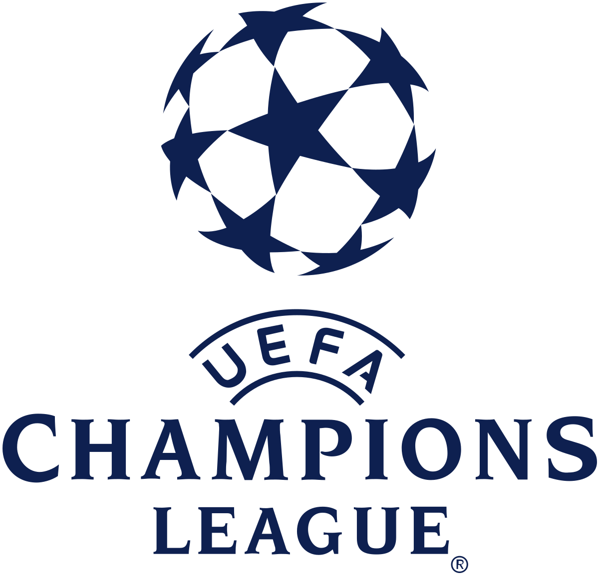

A Copa do Mundo da FIFA é o campeonato internacional de seleções absolutas mais
esperado do mundo, oferece um lugar de honra ao país vencedor na história
futebolística mundial.
Brasileirão
O Campeonato Brasileiro de Futebol, também conhecido como Campeonato Brasileiro,
Brasileirão e Série A, é a liga brasileira de futebol profissional entre clubes do Brasil,
sendo a principal competição futebolística no país.
Copa do Brasil
A Copa do Brasil de Futebol, conhecida simplesmente como Copa do Brasil,
é uma competição nacional de futebol do Brasil. É jogada nos moldes da Copa
da Inglaterra, Taça de Portugal, Copa do Rei, Copa da Escócia, entre outras,
sempre no formato "mata-mata".
Libertadores
A Copa Libertadores da América ou Taça Libertadores da América, oficialmente CONMEBOL Libertadores,
é a principal competição de futebol entre clubes profissionais da América do Sul, organizada pela
Confederação Sul-Americana de Futebol desde 1960.
Copa América
A Copa América é o torneio internacional de futebol masculino de maior antiguidade a nível de seleções
desde sua inauguração em 1916 na Argentina. O evento realizado na América do Sul é organizado pela
Confederação Sul-Americana de Futebol CONMEBOL, o monarca vigente do concurso depois de 28 anos é a
Argentina ao vencer o Brasil na final, além de ser o país com mais campeonatos (15) junto com o Uruguai.
Liga de Campeoes UEFA

É a principal competição futebolística a nível de clubes da Europa, as equipes disputam a Copa conhecida
popularmente como a “Orejona”. O certame continental começou em 1955, a Revista Francesa L’Equipe se
encarregou de promover o evento por ser uma das primeiras Copas entregues em território europeu.